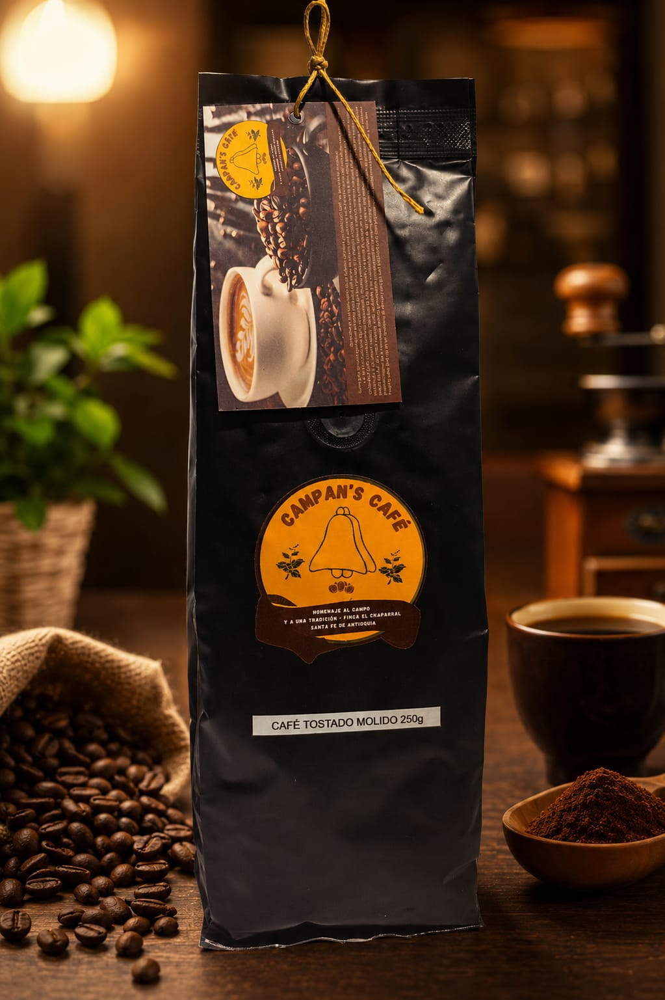

Campan's Café
Café de origen cultivado en nuestra finca, con aroma y sabor tradicional.
Ver másDescubre un lugar donde la naturaleza, el aroma del café y la tradición se unen para brindarte una experiencia inolvidable.
Reserva tu visita